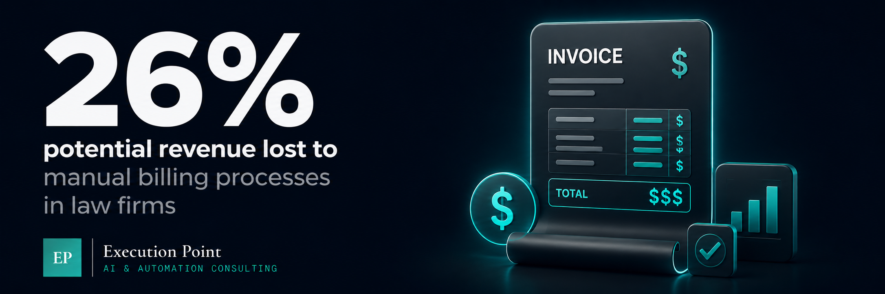
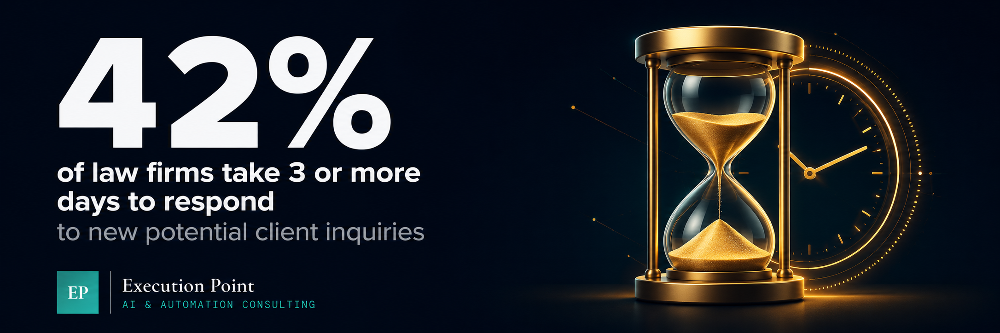
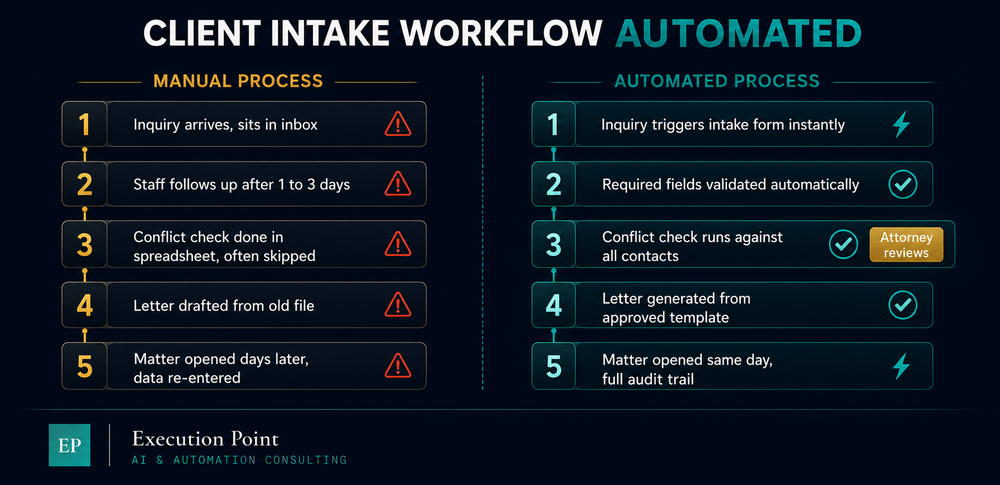
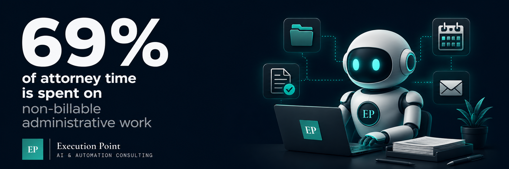

When a law firm contacts us for a free AI Audit, the conversation usually starts the same way. The attorneys know something is wrong. They are working long hours, the administrative burden keeps growing, and they cannot figure out where all the time is going.
The audit answers that question before we recommend anything.
Attorneys spend roughly 69% of their time on non-billable work including administration, client communications, and business development. That is not a people problem. That is a systems problem. In small firms every hour is either billable or it is not. The cost of that gap is immediate and visible.
After auditing operations across small and mid-sized businesses in regulated industries, five workflow areas surface consistently in law firms. These are not the most complex automation opportunities. They are the ones where manual work creates the most friction, the most risk, and the most lost revenue.
Here is what we look at first.

1. Client Intake and Conflict Checks
42% of law firms take more than three days to respond to a new potential client inquiry. In most small firms, intake happens across disconnected tools including email, paper forms, and phone calls, with no consistent process for capturing information or running conflict checks.
During the audit we map exactly what happens from the moment a potential client makes contact to the moment a matter is opened. We look at how long each step takes, where information gets entered manually into multiple systems, and where conflict checks are delayed or skipped because no one has time to run them properly.
A missed conflict check is not just an operational problem. It is a malpractice risk. Automation does not replace attorney judgment on conflicts. It ensures the check happens every time, on every intake, without someone having to remember to do it.
What automation looks like here: a new inquiry comes in, a structured intake form is triggered automatically, required fields are validated, and a conflict check runs against your existing contacts and matters before anyone opens a file.


2. Deadline and Matter Tracking
More than three quarters of lawyers use email as their primary tool for task and project management. Court dates, filing deadlines, statute of limitations dates, and matter milestones tracked in inboxes and personal calendars is one of the highest-risk operational patterns we see in any industry.
During the audit we ask one question: if a key deadline changed today, how many places would need to be updated manually, and how long before the right people knew? In most small firms the answer involves multiple steps, multiple people, and real risk of something slipping.
What automation looks like here: deadlines linked to matter records, dependent tasks that update automatically when a parent date changes, and alerts that reach the right person in advance and not the morning it is due.
3. Document Assembly and Templates
Many legal professionals spend between 40 and 60% of their day drafting and reviewing documents, many of which follow the same structure every time. Engagement letters, retainer agreements, demand letters, and standard pleadings rebuilt from scratch or copied from an old file introduce inconsistency and error at the document level.
We audit document workflows by looking at how standard documents are created, where information is re-entered manually, and how long a paralegal or attorney spends on assembly versus actual legal work. In most cases the templates exist. They are just not connected to anything.
What automation looks like here: a matter is opened, key fields populate automatically from intake data, and a draft document is generated from your approved template, ready for attorney review and not attorney assembly.
4. Billing and Invoice Management
Manual billing processes result in a potential loss of up to 26% in revenue for law firms. Time entries missed, invoices delayed, and follow-up on outstanding balances handled inconsistently are operational problems that show up directly on the P&L.
During the audit we look at how time is captured, how invoices are generated, and what the follow-up process looks like for unpaid balances. In most small firms at least one of these three steps is manual and inconsistent. Often all three are.
What automation looks like here: time entries captured at the matter level, invoices generated on a defined schedule from approved time and expense data, and payment reminders sent automatically based on your terms without anyone having to track who owes what.

5. Client Communication and Status Updates
Clients expect responsiveness. Small firms with lean teams often cannot deliver it consistently. Not because they do not care, but because no one has time to send a status update when they are also handling the work.
We audit client communication by looking at how updates are triggered, who is responsible for sending them, and how often they actually go out on time. In most cases communication is reactive. Clients reach out because they have not heard anything, which creates interruptions and damages the client relationship.
What automation looks like here: matter milestones trigger automatic status updates to the client, intake confirmations go out within minutes of a form submission, and appointment reminders are sent without anyone having to remember to send them.
Where to Start
The right entry point is not the most complex workflow. It is the most painful one. For most small law firms that is client intake or billing. Not because the others do not matter, but because the time savings are immediate and the risk reduction is visible from day one.
The free AI Audit maps all five areas in 60 minutes. You receive a written report within 48 hours showing exactly where your firm is losing time and what automation would look like in each area. No cost, no obligation, no generic advice.